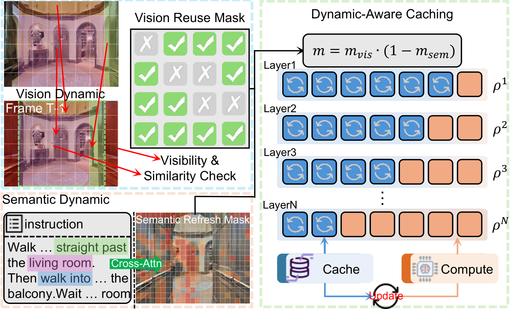
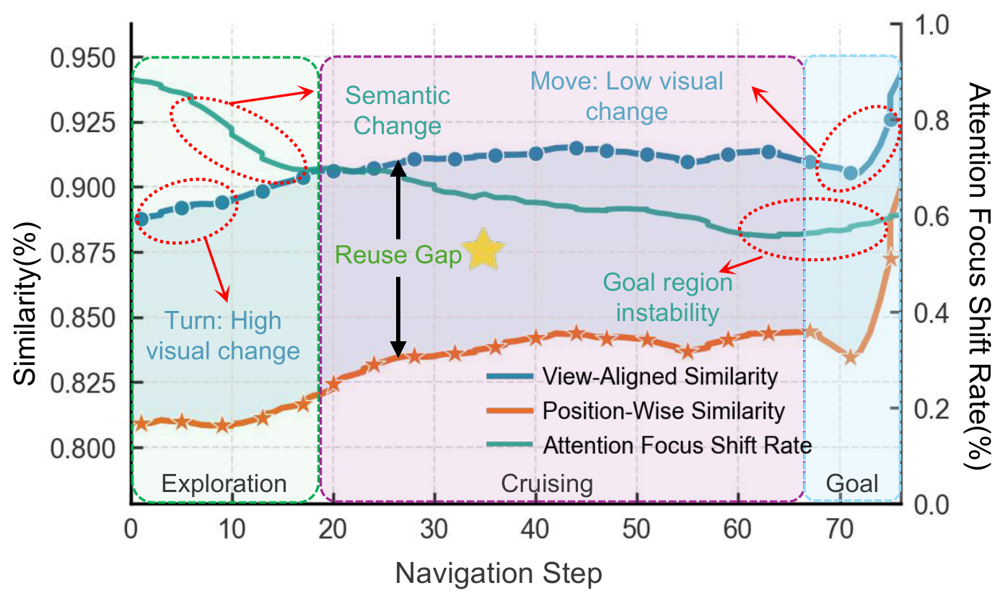

要在会移动的相机上做跨帧 KV 复用，唯一必须补的是：复用前先确定当前 token 对应上一帧的哪个 token。不做这一步，位置对齐会以「高相似度」的名义把错误内容塞回注意力。
- 最小可复用件
- 深度 + 相对位姿把当前 token 反投影再投回上一帧，得到对应索引 \(\pi_{t}(i)\)，检索从 \(i\) 改成 \(\pi_{t}(i)\)；FOV 校验 + 余弦阈值 0.85 为两级门。
- 主要风险
- 位姿/深度噪声让 \(\pi\) 偏几个 patch，后果与不补偿同类；语义分 \(s\) 定义未给全，阈值难照搬；导航 SR 与操控成功率不可混谈。
- 复现门槛
- 免训练、不改权重；但需 RGB-D、内参、相对位姿，以及能读 attention softmax 的白盒模型。单卡 A100-40GB。
1 核心摘要
VLN 把 VLM 当作每步前向一次的 planner：连续环境里走几十步，每步把 RGB-D 观测编码成视觉 token，产出下一个 waypoint。墙、地板、走廊在相邻帧几乎不变，跨帧缓存因此是最自然的加速候选——但这类方法隐含一个从未被检验的假设：同一图像坐标在相邻帧看到的是同一块物理表面。该假设以两种方式失效：
- 视觉动态：相机平移旋转让静止表面在图像坐标上整体位移。位置对齐会把 \([i,\, i+k]\) 的墙与 \([i+\delta,\, i+k+\delta]\) 的另一块表面对上，同时把只是位移、本可复用的 token 判为需重算。量化口径是「复用差」\(\Delta r\)（对齐减位置匹配相似度），平均约 10.3%，Exploration / Goal 阶段更大，Cruising 更小。修法是 view-aligned remapping：深度加内参反投影到 3D，乘相对位姿 \(T_{t\to t-1}\) 投回上一帧，再 \(3\times 3\) 邻域细化得到 \(\pi_{t}(i)\)。
- 语义动态：指令分段推进，客厅通过后不再是决策依据，背景里的沙发变成下一个地标。这类 token 外观不变但缓存已过期。量化口径是注意力 top-k 焦点集的 Jaccard 距离，同样阶段非均匀。修法是 task-relevance saliency filter：相关分 \(s > \tau_{\text{abs}}\) 或 \(|\Delta s| > \tau_{\Delta}\) 即硬否决复用。
两信号乘性合成：
\[ m = m_{\text{vis}}\cdot(1 - m_{\text{sem}}) \]即严格 AND；再按层做熵自适应预算。默认 \(\tau_{v}=0.85\)、\(\tau_{s}=0.70\)、\(k=3\)、\(\rho_{\max}=0.90\)；免训练、不改权重、不换 kernel，作为 forward 的 wrapper 存在。
判定：四篇里唯一改掉「复用候选怎么产生」这一前提的一篇，不是调阈值；代价是判定从纯视觉、自包含变成依赖几何传感器。增量三点：检索索引 \(i \to \pi_{t}(i)\)；任务相关性从一次性剔除升级为「高相关 + 突变率」双向否决；层预算沿用熵策略，但用来吸收两种动态的抖动。只在 R2R-CE val_unseen：1.52× 加速，SR 63.1 对 64.3。
2 复用机制定位
与 VLA-Cache 不同，这篇的主战场是前半段：谁有资格进入候选集（几何对应是否存在），以及何时必须作废（语义是否漂移）。判定三级串联：几何对应落在有效视场 → 重映射后余弦 \(> 0.85\) → 指令相关分越界（\(> 0.70\) 或单步变化 \(> 0.30\)）；前两级用 RGB-D 加位姿，第三级复用已有的 cross-attention。复用单位是单帧 \(M=196\) 个 token × \(L=28\) 层，每层各一份 K/V；失效逐 token 局部，语义门命中即全量重算该 token，没有整帧 flush，也无需重新 prefill。层预算 \(\rho^{\ell}\) 由该层 attention 熵线性折减。
3 问题与动机
3.1 三条前提，在移动平台上逐条塌掉
VLA-Cache 的三段启发式在桌面臂上成立：相机固定、相邻步对齐、任务全程不变。VLN 同时破坏三者：
- 同位置 = 同内容不成立：一转角整幅画面就沿图像坐标滑移，作者给的量级是一个转角让静止墙面漂移四个 patch，此时位置匹配配到的是完全不同的表面。
- 相关性一次性成立不成立：指令分段推进，相关性随子目标完成而反向变化，曾被排除的地标重新关键。
- 层敏感度稳定不成立（较弱）：浅层特征变化慢、深层在指令切换时突变，固定复用率会错配算力。
更隐蔽的是失效静默：墙与墙、地板与地板本就很像，错配 token 未必相似度低；错误表面的旧状态被注入注意力，模型不报错，只是 grounding 慢慢偏掉。
3.2 两个可测的失效量
\(\Delta r\) 恒正、平均 10.3%，说明视角位移是搬家不是销毁——机会仍在，只是被错误匹配丢掉；\(D^{\text{sem}}\) 随阶段起伏，说明语义失效持续但非均匀，纯几何准则捕不到。论文未与 STCache、EgoPrune、FastV 等逐一对比，只比无缓存 backbone 与自身消融。
4 方法拆解
4.1 视觉动态：把「同位置」换成「同一物理点」
输入是每个 token 的中心坐标 \(u_{t}^{(i)}\) 与深度 \(d_{t}^{(i)}\)，对应关系由一次投影往返给出：
\[\pi_{t}(i) = \mathcal{N}\Big(\Pi\big(T_{t\to t-1}\cdot\Pi^{-1}(u_{t}^{(i)},\, d_{t}^{(i)};\, K)\big)\Big)\]\(\Pi^{-1}\) 用内参反投影成相机系 3D 点，\(T\) 变到上一帧，\(\Pi\) 投回像素平面，\(\mathcal{N}(\cdot)\) 在 \(3\times 3\) 邻域内细化，吸收投影像素落在离散 patch 网格之间的量化误差；\(k=3\) 即邻域半径，\(k=0\) 退化为位置对齐。缺深度或深度不可靠的 token 直接重算，加速上限被深度覆盖率卡着。
投影成功不等于可复用：可能被遮挡、光照变化、有动态物体，因此再两级门，同时满足才 \(m_{\text{vis}}=1\)——\(\pi_{t}(i)\) 落在有效视场内，且重映射后余弦 \(> 0.85\)。
4.2 语义动态：双条件检测 + 硬否决
相关分 \(s_{t}^{(i)}\) 由视觉 token 对语言 query 的 cross-attention 聚合而来；论文只说是「instruction-conditioned attention score」，未给归一化与聚合层公式，此处无法照抄。命中任一条即 \(m_{\text{sem}}=1\) 强制刷新：\(s > \tau_{\text{abs}}\)（实验记 0.70）——当前就是决策依据，旧状态再相似也不够；\(|s_{t} - s_{t-1}| > \tau_{\Delta}\)（0.30）——捕捉「量值不大但正在跃迁」的过渡区，典型是子目标切换的瞬间。
语义侧刻意做成硬否决而非软惩罚：视觉稳定只是必要条件，若用加权打分，高置信的视觉匹配会把关键刷新压下去。
4.3 跨帧 KV 拼接与层自适应预算
复用项从对齐位置取，刷新项用当前计算值：
\[ K^{\ell,(i)}_{t} \leftarrow m\cdot K^{\ell,(\pi_{t}(i))}_{t-1} + (1-m)\cdot K^{\ell,(i)}_{t} \]V 同理。
两个工程取舍：① 每个位置都被填满，不产生硬 drop 那种不规则张量与额外 mask 开销，kernel 可整块跑；② 位置相关分量（如 RoPE）不复用——只有新 token 拿到新位置编码，复用 token 的 K 仍带旧索引 \(\pi_{t}(i)\) 的位置信息，与当前 \(i\) 不一致。位移越大错配越明显，复现应单独消融。
层预算形式为
\[\rho^{\ell} = \mathrm{clip}\big(\rho_{\max} - \alpha H^{\ell},\ \rho_{\min},\ \rho_{\max}\big)\]高熵层拿更小预算，低熵层逼近 0.90。\(\alpha\) 与 \(\rho_{\min}\) 的取值论文未给。

Figure 4：左侧为视角位移下的可见性与相似度检查，得出 Vision Reuse Mask；左下为指令随阶段更新后由 cross-attention 得到的 Semantic Refresh Mask；右侧两掩码相乘，各层再按 \(\rho^{\ell}\) 决定复用多少格。
4.4 开销与在线边界
选择开销 \(O(M(D + k^{2} + L_{q}D))\)，与层数无关；节省的是每层 \(W_{K}/W_{V}\) 对全部视觉 token 的投影，约 \(4\rho LMDd_{\text{kv}}\)。以 InternVLA-N1（\(L=28,\ M=196,\ D=3584,\ d_{\text{kv}}=512\)）在 \(\rho\approx 0.31\) 下折算，每步省 12.3 GFLOPs，占总 attention FLOPs 的 18.3%；缓存放 HBM，每帧 11.2 MB。
边界是因果、单帧历史、白盒：要求深度、内参、位姿与 attention 可见。仿真加开源模型成立，黑盒 API 加单目相机全不成立——这是它更难迁移的根本原因。
5 证据与实验
设置。backbone 为 InternVLA-N1，7B、基于 Qwen2.5-VL；VLN-CE 的 R2R，val_unseen 1,839 episodes；指标 NE↓/OS↑/SR↑/SPL↑；单卡 A100-PCIE-40GB（BF16）；免训练。
| 导航（Table I） | Backbone | NE↓ | OS↑ | SR↑ | SPL↑ |
|---|---|---|---|---|---|
| NaVILA | Llama-3-8B | 5.22 | 62.5 | 54.0 | 49.0 |
| StreamVLN | Qwen2-7B | 4.98 | 64.2 | 56.9 | 51.9 |
| DualVLN（无缓存 backbone，本文基线） | Qwen2.5-VL-7B | 4.05 | 70.7 | 64.3 | 58.5 |
| VLN-Cache | Qwen2.5-VL-7B | 3.93 | 71.4 | 63.1 | 57.6 |
前两行是不同 backbone 的方法，不能与本文横向比较；可比的只有最后两行：SR 64.3→63.1、SPL 58.5→57.6（\(\Delta\text{SR} = -1.2\)），但 NE 与 OS 反而变好（4.05→3.93、70.7→71.4）。误差降、成功率也降，方向不一致，论文没有解释，复现时应作为待查项。
效率（Table II）。每步 637 → 419 ms，步级与 episode 加速均 1.52×，复用率 31%，墙钟 114.7 → 75.5 s。效率来自 10 个 episode 的 pilot run，精度在 1,839 个 episode 上测，1.52× 置信度低于 SR。Figure 5 标注的 559→370 ms 与 Table II 非同一测量，以表格为准。
| 消融（Table III，R2R-CE val_unseen） | SR↑ | SPL↑ | 步级加速 | token 复用率 |
|---|---|---|---|---|
| w/o VLN-Cache（基线） | 64.3 | 58.5 | 1.00× | 0% |
| w/o View-Aligned Remap（\(\pi=i\)，即 VLA-Cache 直搬） | 62.4 | 56.8 | 1.41× | 43% |
| w/o Semantic Gate | 62.9 | 57.3 | 1.47× | 30% |
| w/o Visual Gate | 61.7 | 56.1 | 1.61× | 49% |
| Full VLN-Cache | 63.1 | 57.6 | 1.52× | 31% |
任一模块去掉都掉点，「去掉视觉门」掉得最多（61.7，低于不缓存的 64.3，复用率虚高到 49%）——几何对应解决「配给谁」，视觉门解决「表面变了没」，不可互相替代。另有一处措辞不实：正文称去掉几何对齐后复用了「相当」比例，表中是 43% 对 31%；更准确的说法是多复用 12 个点，而且复用错了。超参敏感性只有 Fig. 8/9 的定性曲线，网格点未表格化。

Figure 2：沿一条导航轨迹的逐步曲线：左轴为跨帧相似度，View-Aligned（青）始终高于 Position-Wise（橙），两者间距即复用差；右轴为注意力焦点漂移率（绿），在 Exploration 与 Goal 阶段抬升。
指标口径提醒。SR/SPL/NE/OS 衡量「是否到达、路径是否高效」，与操控的「抓取是否成功」不是同一类量：导航允许多次重规划，单步误差会被后续 waypoint 吸收；操控判定终局且不可逆。因此 1.52× / −1.2 SR 不能与 VLA-Cache 的 LIBERO 数字同表比较。
6 优点、局限与 VLA 适配
可迁移
① 「先对齐、再比较」的判定顺序：相机在动的场景都应先解析跨帧对应。② 语义否决的硬性优先级：视觉稳定只是必要条件，任务相关性变化可单方面否决复用，这个不对称设计可直接搬进 VLA-Cache。③ 逐位置填满、不做硬 drop，对固定张量形状的部署友好。④ top-k 焦点集的 Jaccard 距离可作廉价在线监控量。
不成立的前提
① 需可靠深度与位姿：真机依赖 RGB-D 与 odometry，腕部相机近夹爪处噪声极大。② 「场景静止」假设：VLN 是相机动、世界不动；操控里物体本身在动，\(\pi\) 算对了内容也变了。③ 单帧历史：转向造成大面积失效时，无法从更早的稳定帧回填。④ 指令分段：操控多为单目标，阶段切换信号弱，双阈值未必有意义。
延迟与闭环风险
论文只给理论复杂度，没有掩码计算的实测毫秒数，也没有 1.52× 的分段 breakdown。逐 token 散乱访存容易成为 kernel launch 与随机读瓶颈。转向与子目标切换时复用率骤降，平均 1.52× 不代表 p99；10 Hz 回路里方差比均值更重要，论文未报延迟分布。
与机械臂场景的差异，以及最小改造
三处结构性差异：自运动（底盘大范围平移转向 vs 厘米级末端运动）、轨迹长度（R2R 跨房间几十步 vs LIBERO 百余步但视角不变）、指令粒度（分段长指令 vs 单句）。价值不在数字，在判定顺序。
最小改造：只保留「几何对应」这一层，深度源换成外置相机的多视图三角化，或桌面平面假设下的单应对齐；腕部相机用 hand-eye 标定反投影到桌面平面。语义侧只留「高相关即刷新」。验收看 \(\pi\) 的重投影误差（亚 patch 级）与掩码开销占比（建议 <10%）。
7 落地清单
- 先验前提自检：确认能同时拿到 RGB-D、内参 \(K\)、相对位姿 \(T_{t\to t-1}\)，且模型可读 attention softmax。任一缺失就只做几何对齐或只做语义否决。
- 对齐精度先于缓存：记录 \(\pi_{t}(i)\) 的重投影误差与出视场比例，压到 1 个 patch 以内；\(k=0\) 必须能复现精度崩塌，否则说明场景本就没有视角位移。
- 阈值起点：\(\tau_{v}=0.85\)、\(\tau_{s}=0.70\)、\(\Delta_{s}=0.30\)、\(\rho_{\max}=0.90\)、\(k=3\)；在自采的 20–50 条轨迹上扫 \(\tau_{v}\times\tau_{s}\)，取「SR 掉不超过 1 个点」下的最大加速点，而非最大复用率点。
- 消融做四组：完整 / 无几何对齐 / 无视觉门 / 无语义门。第三组是安全检查——若「无视觉门」不低于基线，说明语义分数在替代视觉门。
- 延迟与位置编码分开验：报 p50 / p95 / p99 延迟与掩码开销占比，转向段单独统计；再把「复用 token 也重算 RoPE」作对照，量化这个近似值多少精度。
来源：Zihao Zheng, Zhihao Mao, Xingyue Zhou, Jiayu Chen, Maoliang Li, Xinhao Sun, Hailong Zou, Zhaobo Zhang, Xuanzhe Liu, Donggang Cao, Hong Mei, Xiang Chen, "VLN-Cache: Enabling Token Caching for VLN Models with Visual/Semantic Dynamics Awareness", arXiv:2603.07080v3 (cs.RO), 2026-04-29；导航指标取自 Table I，效率取自 Table II，消融取自 Table III，超参取自第 VI-E 节，复用差与语义漂移量取自第 III 节与 Figure 2。论文未提供代码或项目页链接。
相关页面：VLA-Cache · 跨控制步 KV 复用 · TVCache · head 可靠性与层稳定性 · 返回专题二